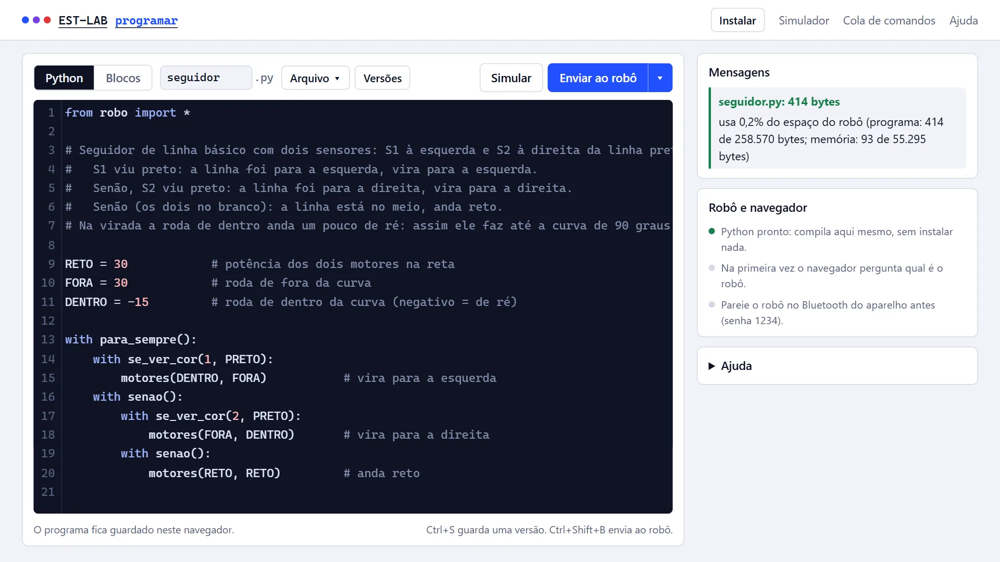
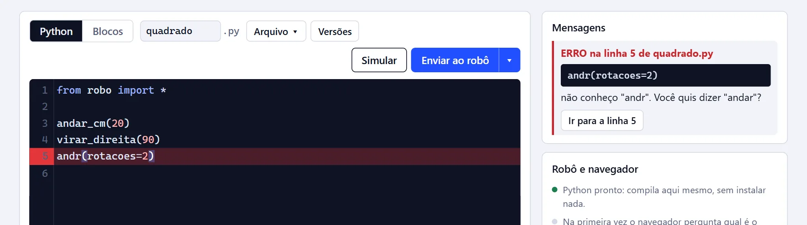
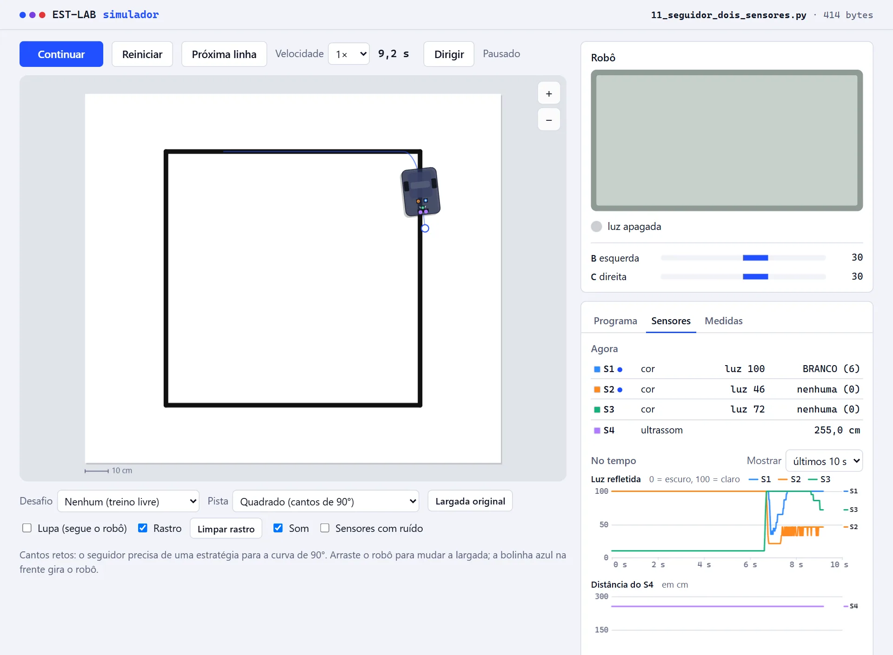
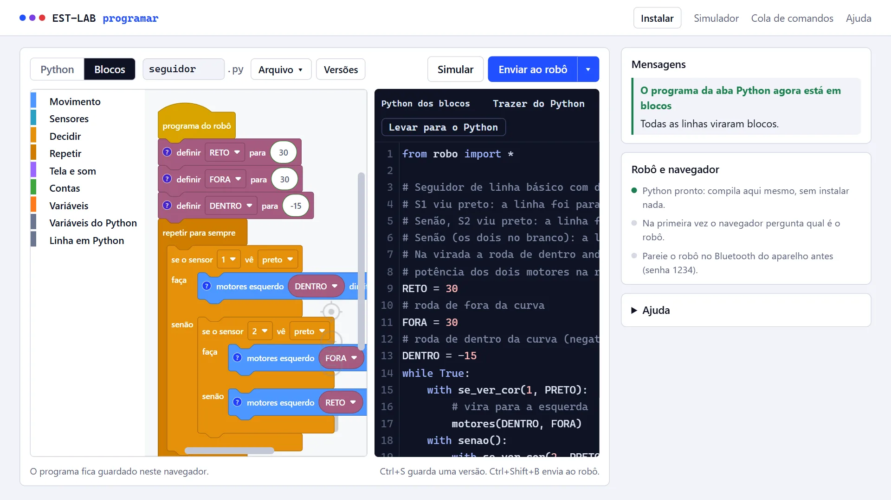

O EST-LAB escreve o programa do aluno e manda para o robô EST sem a IDE do fabricante: pelo
navegador ou pelo VS Code, com comandos como andar_cm(30) e virar_direita(90).
Criado por Andrey Violante, professor de robótica, para as aulas dele. É gratuito e de código aberto.
Programar no navegador Baixar para Windows
Sem o robô por perto? Veja o exemplo do seguidor de linha no simulador.

O compilador gera, byte a byte, os mesmos programas que a IDE oficial gera para os mesmos blocos. A diferença está no que fica em volta: o aluno escreve em português, vê o robô andar antes de enviar e entende o que deu errado.
Os comandos são em português e o if, o while e o for do Python
funcionam com os sensores. Quando algo está errado, a mensagem diz a linha e o que fazer, e o editor marca a
linha.
Antes de enviar, ele também avisa o que quase sempre é engano: variável criada e nunca usada, laço sem espera e motor que fica ligado quando o programa termina.

O simulador executa os mesmos bytes que vão para o robô, numa pista vista de cima: dá para ver o caminho, a tela, a luz, os motores e o que cada sensor está lendo, com um gráfico da luz refletida ao longo do tempo. Próxima linha vai linha por linha, com a linha do Python em destaque.
Tem pistas de seguidor, uma arena da OBR com a pontuação da rodada, 8 desafios com correção automática e o modo Dirigir, em que o aluno leva o robô pelas setas e o programa se escreve.

Para quem vem da programação em blocos: o programa é montado arrastando blocos, e ao lado aparece o Python que eles geram. O caminho de volta também existe: Trazer do Python transforma o programa escrito em blocos.
No celular e no tablet Android, a página vai para a tela inicial e funciona sem internet.

Ctrl+Shift+B no VS Code, ou o botão na página); pelo Bluetooth do Android, ainda sendo conferido no robô..est) como Python, e salva o Python como .est.calibracao.py.São dois caminhos, e o mesmo arquivo .py funciona nos dois.
est-robot-windows.zip (já traz o Python) e use Extrair Tudo.meu_programa.py e aperte Ctrl+Shift+B: o robô acende a luz, apita e escreve "Funcionou!".calibracao.py as medidas do robô e o preto e o branco de cada sensor.O EST-LAB foi feito para a sala de aula. O objetivo é o aluno entender o que o robô faz e aprender a programar, e não receber programas prontos: por isso os exemplos são poucos, e cada turma escreve os seus.
A IA pode ajudar a explicar um código ou a encontrar um erro, mas quem programa é o aluno. Em competições, siga sempre as regras da prova.
O guia do professor tem 8 aulas, do primeiro programa ao seguidor de linha. A cola de comandos cabe numa folha, frente e verso, e o guia da OBR ajuda a organizar e ajustar o programa da prova prática.
Código e material sob licença MIT: use, copie e adapte para as suas aulas.
As dúvidas mais comuns de quem vai começar.
Não. O robô recebe só um programa, numa pasta própria (/vscode), do mesmo jeito que a IDE envia os dela. O firmware não é alterado, e dá para voltar a usar a IDE oficial a qualquer momento.
Não, os dois convivem. Só feche a IDE na hora de enviar pelo EST-LAB, porque ela conversa com o robô ao mesmo tempo.
Sim. O código e o material são livres (licença MIT): use, copie e adapte para as suas aulas.
Os comandos são em português e os erros aparecem explicados, com a linha. Para quem está começando, há os blocos com o Python ao lado.
Pelo navegador, sim: a página Programar funciona no Chrome e no Edge, em Windows, Mac, Linux e Chromebook. O VS Code com envio pelo cabo é para Windows.
No Android, abra a página Programar no Chrome e toque em Instalar: ela fica na tela inicial e funciona sem internet. Tem blocos, uma barra com os símbolos do Python acima do teclado, o simulador com o modo Dirigir (o programa se escreve enquanto o aluno anda com o robô) e o envio pelo Bluetooth, que ainda vai ser conferido no robô.
É um projeto independente, feito para o robô conversar com outro programa (interoperabilidade). Não usa código do fabricante e não distribui nada da IDE. Também não tem relação com o fabricante.
Conte para o autor registrando a sua escola (opcional e público, sem dados de alunos).
Só números anônimos: quantas instalações perguntam pela versão nova por dia (no máximo uma vez cada) e quantas visitas estas páginas recebem. Nada de nomes, e-mails ou dados de alunos, e sem cookies. Para desligar no VS Code, ponha AVISO_DE_VERSAO = False no calibracao.py.
O EST-LAB tem DOI permanente, que vale para todas as versões: 10.5281/zenodo.23692767. No formato da ABNT:
VIOLANTE, Andrey. EST-LAB: programação da controladora EST em Python pelo VS Code. [S. l.]: Zenodo, 2026. DOI: 10.5281/zenodo.23692767. Disponível em: https://doi.org/10.5281/zenodo.23692767. Acesso em: dia mês ano.
Outros formatos (APA, BibTeX): botão Cite this repository na página do projeto no GitHub.
Abra uma issue no GitHub contando o que aconteceu e a mensagem de erro.